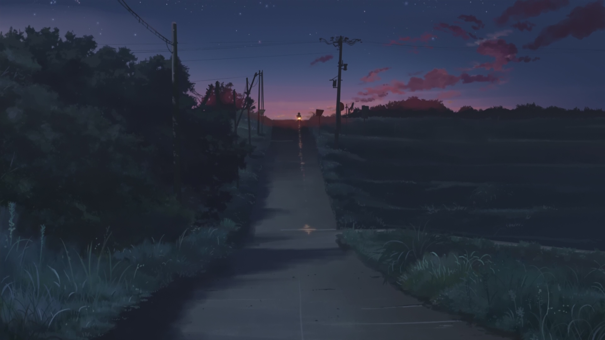

Synopsis
5 Centimeters per Second (Japanese: 秒速5センチメートル, Hepburn:
Byōsoku Go Senchimētoru) is a 2007 Japanese romantic drama animated
film written and directed by Makoto Shinkai. It theatrically premiered
on 3 March 2007. The film consists of three segments, each following a
period in the life of the protagonist Takaki Tōno and his
relationships with the girls around him. The film was awarded Best
Animated Feature Film at the 2007 Asia Pacific Screen Awards. It
received a novelization in November 2007 and a manga adaptation
illustrated by Seike Yukiko in 2010.
Plot
In 1991, Takaki Tōno quickly befriends Akari Shinohara after she
transfers to his elementary school in Tokyo. They grow very close to
each other due to similar interests and attitudes such as both
preferring to stay inside during recess due to their seasonal
allergies. Takaki and Akari begin to refer to each other using their
given names without honorifics, which is an indicator of close
friendship and intimacy in Japanese culture. Right after graduating
from elementary school in 1994, Akari moves to the nearby prefecture
of Tochigi due to her parents' jobs. The two keep in contact by
writing letters but eventually begin to drift apart. When Takaki
learns that his family will be moving to Kagoshima on the other side
of the country the following year in 1995, he decides to personally
go see Akari one last time since they will be too far apart to see
and visit each other once he moves. He also writes a letter for
Akari to confess his feelings for her. However, Takaki loses the
letter during the journey and a severe snowstorm delays his train
for several hours. When the two finally meet late that night and
share their first kiss, Takaki realizes they will never be together.
They find a shed to spend the night in due to the severe snowstorm
and fall asleep after talking late into the night. Takaki departs
from the train station the next morning and the two promise to
continue writing to each other. As the train rolls away, Takaki
decides that the loss of his letter is not important anymore after
the kiss while Akari silently looks at her own letter addressed to
Takaki which she decided not to give him.

In 1999, Takaki is now in the third year of senior high in
Tanegashima, where the Tanegashima Space Center is located. Kanae
Sumida, a classmate of Takaki, has loved him ever since first
meeting him in middle school but has never had the courage to
confess her feelings to him. She tries to spend time with him,
waiting long after school for the chance to travel home together.
However, Takaki appears ignorant of Kanae's feelings and only treats
her as a good friend. Kanae observes that Takaki is always writing
emails to someone and staring off into the distance as if searching
for something far away. It is later shown that Takaki's emails are
not being sent to anyone, and he, in fact, deletes them after he
finishes writing them. He also has recurring dreams which feature
Akari. After a failed attempt to tell Takaki she loves him, Kanae
realizes he is looking for something far beyond what she can offer
and decides not to say anything, though she believes she will always
love him. With such thoughts, she cries herself to sleep.
It is now 2008 and Takaki is a programmer in Tokyo. Meanwhile, Akari
is preparing to marry another man. Takaki still longs for Akari to
the detriment of his lifestyle. He receives a call from his current
girlfriend but does not answer which signifies the end of the
relationship. Depressed, Takaki quits his job as he is unable to
cope with his feelings for Akari. Akari goes through a box of her
old possessions and finds the letter she had written for Takaki
thirteen years ago in 1995. Takaki finds himself in a convenience
store reading a magazine about the decade long journey of the rocket
launched in the 2nd act. Takaki and Akari begin a dual narration
where they both recall a recent dream. In the dream they relive
their last meeting in the snow-filled Iwafune and remember the wish
to someday watch the cherry blossoms together again. Later, while
walking down the same road they knew when they were children, Takaki
and Akari appear to pass and recognize each other at the train
crossing. It is the same place they had promised to watch the cherry
blossoms together thirteen years ago, just before Akari moved to
Tochigi. On opposite sides of the tracks, they stop and begin to
look back, but a passing train cuts off their view. Takaki waits for
the train to pass and finds that Akari is gone. After a moment, he
smiles to himself and continues walking as the cherry blossoms stir
in the train's wake.
Production
Makoto Shinkai has expressed that, unlike his past works, there would
be no fantasy or science fiction elements in this film. Instead, the
feature film would attempt to present the real world from a different
perspective. Shinkai's film gives a realistic view of the struggles
many people have to face: time, space, people, and love. The title 5
Centimeters per Second comes from the speed at which cherry blossom
petals fall, with petals being a metaphorical representation of
humans, reminiscent of the slowness of life and how people often start
together but slowly drift into their separate ways. The movie marks
the first time Shinkai has worked closely with a full staff of
animators and artists.